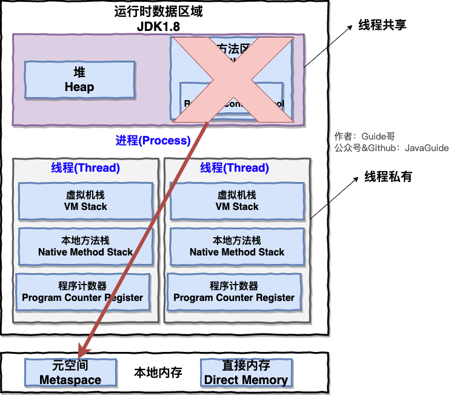

摘要：Java高级之JVM虚拟机，包括类加载机制，创建对象，内存分配机制，GC 垃圾回收，JVM 调优等。
[TOC]
Student stu = new Student("Tom");
stu.sayName();
1）【字节码执行机制】：编译 Application.java 得到 Applciation.class 字节码文件。
2）【类加载机制】：
Application.class，将 Application 的类信息加载到方法区；3）【new 创建 student 对象】：（简化版）
stu，字面量"Tom"放在字符串常量池中（4) 执行方法：根据 stu 引用找到 Student 对象，获取 sayName() 的字节码地址并执行。
new 一个对象的流程（详细版）：加载并初始化类、创建对象。
Student stu = new Student("Tom");，则：
stu，字面量"Tom"放在stu；类的实例化/创建对象的顺序：
- 先静态、先父后子；
- 按在代码中出现的顺序依次执行。
执行顺序：（优先级从高到低）静态代码块 > 构造代码块 > 构造方法 > 普通方法。
类加载时？执行静态代码块和静态初始化语句：
创建对象执行顺序：
实例数据：存储代码中所定义的各种类型的字段信息。
String str = new String("hello");
// 变量str放在VM栈上的局部变量表中
// 用new创建出来的String对象放在堆中
// 而"hello"这个字面量放在方法区的运行时常量池
字节码：JVM 可理解的代码（即扩展名为 .class 的文件）。

.java）.class）；Class Loader 加载字节码文件；Execution Engine 通过解释器逐行解释执行，执行速度相对较慢；Runtime Data Area（运行时数据区，即常说的 JVM 内存）。包含类的版本、字段、方法、接口等描述信息外，
还有静态常量池：用于存放编译器生成的各种字面量(Literal)和符号引用。
（根据 jclasslib Bytecode viewer 反编译插件解析的）.class 字节码文件包括：
0XCAFEBABE；public 或 abstract 类型，是否声明为 final 等；"hello" => 加载进字符串常量池；JDK1.7 字符串常量池和静态变量被从方法区拿到了堆中；final 常量值、基本数据类型的值15等；JIT 即时编译器编译后的代码（缓存）。ClassLoader：用来加载 Class，负责将 Class 的字节码形式转换成内存形式的 Class 对象。
根据（常量池中的）动态链接定位类的符号引用，检查当前类是否已被加载：
速记：加莲 厌准姐 初

初始化：执行构造器，初始化实例成员变量和真正初始化 static 成员变量。
public static int i =3 ;
// 第一次初始化后i的值为0，
// 第二次初始化后值才为3.
使用：一旦某个类的 Class 对象被载入内存，.class文件就被用来创建这个类的所有（实例）对象。
用于加载类？
工作过程：类加载器收到类加载请求后，
ClassNotFoundException 异常。WEB-INF/classes下应用自定义的的类和 WEB-INF/lib下的jar应用依赖包中的类。CATALINA_HOME/lib 下，如：servlet-api.jar。CATALINA_HOME/bin 下
详解：Tomcat - 都说Tomcat违背了双亲委派机制，到底对不对？、图解Tomcat类加载机制(阿里面试题)
ClassLoader：用来动态加载（按需加载）.class 字节码文件到 JVM 内存（=> 内存形式的 Class 对象）。
不同层次的类加载器检查顺序、优先级：
CustomClassLoader。%JRE_HOME%/lib/ext 目录下的 jar 包和类，通常以 javax 开头）；%JAVA_HOME%/lib目录下的 jar 包和类）、构造其它 ClassLoader。不同层次的类加载器有不同优先级的好处：
(JVM 搜索类时)判断两个class是相同的，要同时满足：
对于
equals()、instanceof()等方法来判断对象相等或所属关系都需基于同一个 ClassLoader。
注意与 Java 内存模型不同，JMM 是多线程中并发、线程同步相关的概念


自动内存管理：最核心的是堆内存中对象的分配与回收。
每个进程分配一块 JVM 运行时数据区（RunTime Data Area）/ 内存空间，分为两种类型：
栈负责执行方法（运行代码），存放局部变量；堆负责存储数据（对象等）。
PC Register：表示当前线程（所执行字节码）的行号指示器，由字节码执行引擎负责修改。字节码解释器通过改变程序计数器来依次读取指令，从而实现代码的流程控制：
唯一没有
OOM（内存溢出）和StackOverFlowError的内存区域。
JVM Stack：是描述 Java 方法执行的内存模型。每个 Java 方法在执行时会创建一个栈帧，方法从开始调用到执行完成，就是栈帧从入栈到出栈的过程。用于存储：
易出的错误：
StackOverFlowError（若 VM 栈的内存大小不允许动态扩展）：栈帧中的局部变量过多时，常出现在递归、循环调用中 => 线程请求栈的深度>当前VM 栈的最大深度；OutOfMemoryError（若 VM 栈的内存大小允许动态扩展）：堆中没有空闲内存，且 GC 也无法提供更多内存 => 无法申请到内存时抛出；
Native Method Stack：为VM用到的 Native 方法服务，其它与VM栈一致。在 HotSpot VM 中和 Java 虚拟机栈合二为一。
Heap：存储对象本身（由 new 和构造器创建）及数组本身，但引用在VM栈的局部变量表中。
是 JVM 所管理的内存中最大的一块，在 JVM 中只有一个堆，GC 主要管理的对象。
分为：
Eden 伊甸区、Surviveor From（S0）、Surviveor To（S1）；JDK1.8 前，HotSopt 虚拟机的方法区又被称为永久代；

易出的错误：
OutOfMemoryError: GC Overhead Limit Exceeded：GC上限超出，GC 时间长，但只回收了很少的堆内存；OutOfMemoryError: Java heap space：堆内存不足以存放新创建的对象；
（JDK1.7 及以前）HotSpot 把 GC 分代收集扩展至方法区，即用堆的永久代（PermGen）实现方法区，习惯上把方法区称为永久代。
JDK1.8：取消永久代，用 Metaspace 元空间实现方法区；实际位于本地内存中。

对方法区内存回收的主要目标是：对常量池的回收和对类的卸载。
方法区（Method Area）/永久代/静态存储区：用于存储已被虚拟机加载的字节码文件：
"hello" => 加载进（堆中的）字符串常量池；JDK1.7 字符串常量池和静态变量被从方法区拿到了堆中；final 常量值、基本数据类型的值15等；（变量名存在局部变量表中？）易出的错误：
OutOfMemoryError
由OS管理；JDK 1.4 引入的 NIO 提供了基于 Channel 与 Buffer 的 IO 方式，可用 Native 函数库直接分配堆外内存, 用 DirectByteBuffer 对象作为这块内存的引用进行操作, 避免了在 Java堆和 Native 堆中来回复制数据。
用于判断对象可被回收的时机。
Java执行GC（回收方法）判断对象是否存活有两种方式、其中一种是引用计数。从JDK 1.2版本开始，对象的引用被划分为4种级别，从而使程序能更加灵活地控制对象的生命周期。
引用类型/级别由高到低依次为：
null、或让其超出对象的作用域、生命周期范围）。常用于普通的对象引用关系，如声明一个 String str = new String("Const")。SoftReference 类创建。
WeakReference 类创建。
// 强引用
String str = new String("abc");
// 软引用
SoftReference<String> softReference = new SoftReference<String>(str);
// 弱引用转强引用
WeakReference<String> weakReference = new WeakReference<>(str);
String strongReference = weakReference.get();
// 创建虚引用，要求必须与一个引用队列关联
ReferenceQueue queue = new ReferenceQueue();
PhantomReference pr = new PhantomReference(str, queue);
对象死了就立刻会被回收吗？
对象死了一定会被回收吗？
回收时机：
废弃常量（被运行时常量池回收）：在没有被任何对象引用时。
ClassLoader 已被回收；如何判断一个对象存活？
回收方法有两大类：
GC Roots 对象作为起始的存活对象集，向下搜索走过的路径（引用链/可达路径），GC Roots 没有任何引用链），表示该对象是不可达的；二次标记后还没成功逃脱，只能被回收。用可达性标记：在GC开始的时候，会从 GC root 出发标记，沿着对象的引用链，标记存活的对象。在标记完成之后，再执行回收算法。
Mark-Sweep）：维护空闲列表，记录可用内存，标记结束后统一回收。比如说 CMS 就采用了空闲链表来管理空闲内存。
Mark-Compact）：指针碰撞，将存活对象都向一端移动，清除边界外的。如，采用这个算法的有 Serial Old 和 Parallel Old。
Copying）：将可用内存按容量划分为大小相等的两块，当一块内存用完后，将存活的对象移动到另一块，并交换指针，清理已用内存。如，Serial New, Parallel New 和 G1。
GC Roots 的对象：按 JVM 内存分配区域的顺序。
GC root：指在GC启动的时候必然存活的一组对象。一般来说，GC root 包含：
JNI 引用的对象；引用计数中的
循环引用：指多个对象之间互相引用，最终行成一个环，因此它们的计数永远都不会为0。
一般是有三种策略：
三色标记法：指在标记过程中将对象标记为黑色、灰色或者白色。黑色代表存活对象，灰色代表正在标记中，白色表示死亡对象；

误标记：这个标记过程可以和应用线程并发运行，不过可能存在一个问题，
就是可能一个对象被标记为黑色（即存活），但是随后应用线程更新了指向它的引用，它变成了死对象。
这个时候，标记结束之后，该对象依旧会被认为还存活着（活死人，假阴性）。
如何解决循环引用：使用三色标记法能够天然解决循环引用的问题。
核心思想是根据对象存活的生命周期将内存划分为若干个区域。JDK1.8 后：

Minor GC 是指年轻代的垃圾回收，Major GC 是指 Full GC。
From Survivor0 和 To Survivor1 空间（比例为 8：1：1）；
Minor/Young GC，将存活对象移动到 S0，年龄默认为1；Minor/Young GC，将存活对象移动到 S1，年龄+1；S1中年龄增加到一定阈值如 15）或 S1 被填满，会被移动到老年代；Full GC ，清理新生代、老年代、方法区，仍无法存储对象则抛出OOM。
Major/Old 老年代 GC，对老年代 GC。分代，核心就是为了提高 GC 效率。
Concurrent Mark Sweep）并发标记清除收集器：并发，注重用户线程的停顿时间，以获取最短回收停顿时间为目标。标记-清除算法实现的。算法又有并发和并行之分。
这里提到的并发和并行，在GC这个特定的语义下，含义稍微有点区别。
多核 CPU 之下，并发往往意味着并行。即，GC 线程和应用线程、GC线程和GC线程、应用线程和应用线程都是并行的。
但是并行不一定意味着并发。例如 Java 里面的 Parallel New，就是GC线程并行收集，这个就不是并发的，因为没有应用线程此时也在运转。
优缺点：
为什么使用并发 GC？
你了解 CMS 吗？面试官就是指望你回答出来 CMS 的基本特征，基本流程。
CMS 是 hotspot 虚拟机上的一个实现，并不是某种算法。使用的算法是标记-清扫。
基本特征：CMS 是一个基于标记-清扫算法的并发垃圾回收器，主要用于老年代回收。
CMS 有几次停顿？是哪几次？
基本流程、执行步骤：可以分成六个步骤：在一般意义上的四步基础上引入额外的两步，并发预清理和并发重置。
G1 的目标是控制住停顿时间。
相比于 CMS 的改进：
步骤：G1 具体来说，可以分成 Young GC, Mixed GC 两个部分。
在标记阶段结束之后，G1 步入评估阶段，就是利用前面标记的结果，看看回收哪些 Region。G1 会根据近期的 GC 情况来判定要回收多少个 Region，在达到期望停顿时间的情况下，尽可能回收多的 Region。
而 G1 会优先挑选脏的 Region 来回收。
增量回收：核心在于，回收的时候并不是将整个堆，或者整个分代回收掉，而是只回收部分。
分析：CMS 和 G1 都可以被认为是近年面试考察的高频考点。G1 的复习也类似于 CMS 的复习，重点在于捋清楚其中的步骤。而后为了刷出亮点，可以尝试在部分细节上下功夫。
G1 的几个基本概念要捋清楚：
这里给出一个理解 G1 算法的思路：
G1 的目标是控制住停顿时间。那么我们怎么控制停顿时间？一种比较好的思路就是，我每次回收只回收一小部分内存。例如说我有一个 32G 的堆，我每次只回收 4 个G。那么如果原来你停顿时间是32秒，回收 4G 就只需要5秒。
进一步你就会想，如果是我来设计这个 G1，我要想做到这一步，我该怎么搞？我能不能先把堆分成四部分，每次回收其中的一部分？
答案是可以的。然后你就又会遇到问题，有些人可能想回收三分之一的堆，那你怎么办？加个参数控制？比如说启动的时候让用户指定把堆分成多少分？
那么问题又来了，用户也不知道该分成多少份才能恰好满足自己希望的停顿时间。
这个时候你就会考虑，能不能让用户把他希望的停顿时间告诉你，你自己来决定回收多大的一块。
到了这一步，你又会发现一个问题，即便用户告诉你期望停顿时间要控制在一秒内，于是你提前把堆分成了三十二份，但是因为应用的负载不是静态的，导致你每次回收一份，也会经常超出期望。
这个时候，你就会想，我这提前划分好感觉不太靠谱，能不能动态划分呢？
所以问题的根源就是怎么做到动态划分，比如说一会分成三十二份，一会分成六十四份。这个问题难在哪里？难在怎么知道不回收的部分，有哪些引用指向了被回收部分。如果直接动态划分，就没法子维护整个信息。
那么，你就会想到，我能不能先把堆划分得很细碎，比如说，我直接把堆分成1024份，每一份自己维护一下别人引用自己内部对象的信息？然后当回收的时候，我就从里面挑。比如说这次回收，预计一秒内只能回收128份，那我就挑128份出来回收掉；下一次能更惨，只能回收64份，所以我就挑64份来回收。
这就是 G1 的基本思想。
这就是抓住 G1 的核心。G1 的后面的一切，都是因为分成了那么多小份，然后每一次要挑出来一部分回收。
然后我们从这一点出发，看一下 G1 的各种奇技淫巧。
首先 Region 我们已经说过了，就是为了能够保证 GC 期间灵活选择而不得不划分的。
那么 RSet（记忆集）又是拿来干啥？用来记录别的 Region 引用本 Region 内部对象的结构体。为什么要记录？不记录的话不知道这个 Region 内部的对象是不是活着。
那么怎么理解 G1 的两种模式？
我们再考虑一下，我想要挑出来一部分 Region 来回收，我是随机挑吗？当然不是，我希望尽可能回收脏的 Region。那么什么 Region 比较脏？
显然是放着年轻代对象的 Region 比较脏。因为对象朝生夕死，所以想当然的我们会说我们优先挑年轻代的 Region 就可以了。
那么问题来了，你不能一直挑年轻代，你总要挑老年代的，不然老年代岂不是永远不回收了？
所以我们会想到，启动一个后台线程，扫描这些老年代的 Region，看看脏不脏。要是很多已经很脏了，我们就把这部分老年代的 Region 回收掉。
这就是 G1 的 Young GC、Mixed GC 和全局并发标记循环的来源了。
这里面还有几个细节，我们沿着思路继续思考下去。
首先一个，并发标记循环，意味着应用也在运行，如果我在标记过程中，引用被修改了，怎么办？这就是引入了 SATB（ snapshot at the beginning）。这个名字就有点让人误解，会以为 G1 真的记了一个快照，其实不是的。简单来说，可以理解为这个机制记录了在并发期间引用发生过修改的对象。在最终标记阶段，会处理这些变更。
其次，如果我要是 Mixed GC 太慢，还没来得及回收老年代也满了，怎么办？这个问题和 CMS 是一样。那么 CMS 是怎么解决的？退化为 Serial Old GC。很显然，G1 也是一样处理的。（从这个角度来说，可以理解 Serial Old 是一个后备回收器，只要你 CMS 或者 G1 崩了，那就是它顶上）
前面我们还提到，就是要挑出脏的，那么什么才是脏的，那就是要算一下，里边活着的对象还有多少。要是一个活着的对象都没了，这个 Region 是不是可以直接回收了？都不用复制存活对象了。这就是并发循环标记最后一步，把发现的一个存活对象都没了的 Region，脏得彻底的 Region 直接收回。
还有一个点，其实算是优化，而不算是本质。就是并发标记循环会复用 Young GC 的结果。在 Young GC 的初始标记完成后，一边是 Young GC 继续下去，一边是并发循环标记。
接下来我们想，每次挑出来多少个才是合适呢？之前我们已经揭露了，静态划分是不行的，因为要根据程序动态运行来决定挑多大一块内存来回收。因此我们肯定不能用参数或者直接写死，而是要实时计算。
那么怎么计算呢？这个细节，面试基本不会考。大概的原理是考察最近的几次 G1 GC 的情况，大概推断这一次 G1 至多回收多少块。有点像是根据最近几次 GC 的情况，来猜测这一次 GC 回收每一块 Region 需要多长时间，然后算出来。核心在于，根据最近几次情况来推断。
G1 的面试总体上来说不如 CMS 常见。原因很简单，对于大多数应用来说，4G 的堆就足够了。在这个规模上，G1 是并不比 CMS 优秀的。而且 CMS 因为应用得多，所以懂得原理调优的人比 G1 多。
答案：G1 将整个内存划分成了一个个块，通过这种块，可以控制每次回收的时候只回收一定数量的块，来控制整个停顿时间（这就是引入Region的目标）。
有三类 Region：
每一个 Region 归属哪一类并不是固定不变的，也就是说，在某一个时间点，一个 Region 可能是放着年轻代对象，另一个时间点，可能放着老年代对象。
Region 内部内存是如何分配的：为对象分配内存就比较简单了，Region 内部通过指针碰撞分配内存。为了减少并发，每一个线程，会从 Region 里面申请一大块内存，这块内存叫做 TLAB（thread local allocation buffer），每一个线程自己内部再分配。
类似问题
答案：在每一次 GC 的时候，G1 会挑选一部分的 Region 来回收，这部分 Region 就被称为 CSet。
分析：其实和 CMS 类似，核心都是在老年代尝试分配内存的时候，找不到足够的空间，就会退化为 Full GC。
所以总结下来就是两个：
答：主要是两个时机：
如何解决 Full GC：
和 CMS 的相同点：基本上，G1 触发 Full GC 和 CMS 触发 Full GC 是类似的，核心都在于并发模式失败，老年代找不到空间。所不同的是 G1 有专门的存放大对象的 Region，所以这一点会稍微有点不同。
CMS 和 G1 都是并发垃圾回收器，不同表现在三个角度：
答案：G1 用的是 SATB。处理机制可以归结为：利用写屏障，（当引用变更的时候），会把（并发标记期间被修改的引用）都记录到一个 log buffer 里面，在重标记阶段重新处理这个 log。
和 CMS 对比：这个机制和 CMS 是比较像的，差别在于 CMS 是把内存对应的卡表标记为脏，并且引入预清理阶段，在预清理和重标记阶段处理这些脏卡。
和 Redis BG save 对比：这种 snapshot + change log 的机制，在别的场景下也能看到。比如说在 Redis 的 BG Save 里面，Redis 在子进程处理快照的时候，主进程也会记录这期间的变更，存放在一个日志里面。后面再统一处理这些日志。
OutOfMemory）：申请不到；指程序在申请内存时，没有足够的内存空间供其使用。Memory Leak）：释放不了；指程序在申请内存后，无法释放已申请的内存空间；最终将导致内存溢出。OutOfMemoryError: GC Overhead Limit Exceeded：GC上限超出，GC 时间长，但只回收了很少的堆内存；OutOfMemoryError: Java heap space：堆内存不足以存放新创建的对象；OOM 分析思路：
-XX:+HeapDumpOnOutOfMemoryError：发生 OOM 时，dump 一份内存快照文件，输出出错时的堆内信息，用于排查问题。-XX:+HeapDumpPath=/usr/local/app/oom吞吐量、延迟、内存占用三者类似CAP，构成了一个不可能三角，只能选择其中两个进行调优，不可三者兼得。
选择了其中两个，必然会会以牺牲另一个为代价。
下面是 JVM 调优的量化目标参考实例：
一般情况下，JVM调优可通过以下步骤进行：
以上操作步骤中，某些步骤是需要多次不断迭代完成的。一般是从满足程序的内存使用需求开始的，之后是时间延迟的要求，最后才是吞吐量的要求。
要基于这个步骤来不断优化，每一个步骤都是进行下一步的基础，不可逆行。
在 JVM 的启动参数中加入：
-Xms/-Xmx：设置堆的最小/最大容量；
-XX:InitialHeapSize/-XX:MaxHeapSize；-Xmn：新生代大小；扣除新生代剩下的就是老年代大小；
-XX:MaxNewSize；-Xss：线程栈大小；-XX:NewSize/MaxNewSize：新生代最小/最大值；-XX:MetaspaceSize/-XX:MaxMetaspaceSize：指定元空间大小和最大值（超过最大值时，将进行死亡类及类加载器的垃圾回收），默认为21M和-1（即没有限制）。
-XX:PermSize/MaxPermSize。-XX:SurvivorRatio：新生代 Eden 区 / Survivor 区，默认为 8，即 8:1:1。命令行启动时按如下格式设置、构建应用时设置 VM 参数：
java -jar -Xms1G -Xmx1G -Xmn512M -Xss1M -XX:MetaspaceSize=128M -XX:MaxMetaspaceSize=128M app.jar
IDEA help 中 Global VM 参数设置：idea.vmoptions
-Xms128m
-Xmx1024m
-XX:ReservedCodeCacheSize=512m #
-XX:+IgnoreUnrecognizedVMOptions
-XX:+UseG1GC #
-XX:SoftRefLRUPolicyMSPerMB=50
-XX:CICompilerCount=2
-XX:+HeapDumpOnOutOfMemoryError #
-XX:-OmitStackTraceInFastThrow
-ea
-Dsun.io.useCanonCaches=false
-Djdk.http.auth.tunneling.disabledSchemes=""
-Djdk.attach.allowAttachSelf=true
-Djdk.module.illegalAccess.silent=true
-Dkotlinx.coroutines.debug=off
-XX:ErrorFile=$USER_HOME/java_error_in_idea_%p.log
-XX:HeapDumpPath=$USER_HOME/java_error_in_idea.hprof
--add-opens=java.base/jdk.internal.org.objectweb.asm=ALL-UNNAMED
--add-opens=java.base/jdk.internal.org.objectweb.asm.tree=ALL-UNNAMED
-javaagent:C:\win-idea-activation\ja-netfilter.jar=jetbrains
目的：减少GC（STW）。
JVM Process Status）：类似 UNIX 的 ps 命令。查看所有 Java 进程的启动类、传入参数和 JVM 参数等信息；JVM Statistics Monitoring Tool）：用于收集 HotSpot 虚拟机各方面的运行数据；Configuration Info for Java）：显示虚拟机配置信息；Memory Map for Java）：生成堆转储快照；JVM Heap Dump Browser）：用于分析 heapdump 文件，建立一个 HTTP/HTML 服务器，让用户可在浏览器上查看分析结果；Stack Trace for Java）：生成虚拟机当前时刻的线程快照（当前虚拟机内每一条线程正在执行的方法堆栈的集合）。